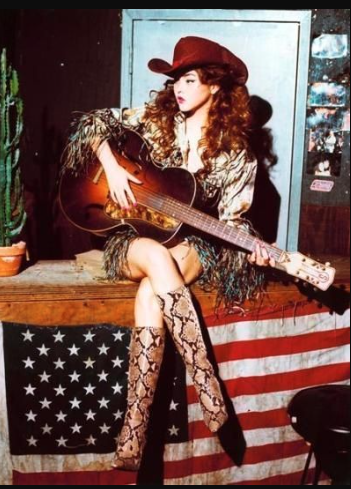

=What Is Country Music
What is Country Music?
Country Music is a form of popular music which originated in the early 20th century in the rural southern and western US. The genre focusses on lyricism and melody.
It is a mixture of ballads and dance tunes and is usually played on the fiddle, banjo, guitar, and pedal steel guitar.
The lyrics are often based on stories about rural life, working-class experiences, and love, reflecting particular American musical traditions and values.
It's origins have been traced to the southern Appalachian Mountains in the late 1920s, especially in eastern Tennessee and southwest Virginia.
Country is a Top 40 genre. In the twenty-first century, mainstream country music rivals hip hop and dance pop for dominance of the Billboard charts. Singer-songwriters like Taylor Swift, Miranda Lambert, Blake Shelton, Eric Church, Carrie Underwood and Lady Antebellum enjoy widespread airplay and inclusion on pop music streaming playlists.
Televised industry events like the Country Music Awards (CMA) have brought further awareness to the genre and increased its reach.
A Brief History of Country Music
Country music emerged in the mountain towns surrounding Bristol, Tennessee in the 1920s. Early stars of the genre included Jimmie Rodgers and the Carter Family
Country music first became popular on local radio. In the mid-20s a radio program recorded in Nashville, called Grand Ole Opry, brought country music to a national audience.
String bands were popular in the 1930s and '40s. Performing as bluegrass string bands, some artists created country hits based around dynamic playing. These players became stars of Appalachia, Texas, and rural America after performing in clubs known as honky tonks and on radio broadcasts.
Country singers dominated rural radio. During the same period, "singing cowboys" and crooners brought country songs to the masses.
Country's popularity grew in the second half of the century.
Following in the footsteps of Johnny Cash, a star of 1950s and 1960s country music, some artists rejected the commercial trappings of mainstream country and over time, they pioneered a subgenre known as outlaw country.
Alt country took hold among indie rock fans. Country music has long had an alternative side, anchored by songwriters such as Townes Van Zandt and Guy Clark. Their songwriting and performance style helped inspire the alt-country movement of the 1990s and 2000s.
In 2019, the PBS network aired an eight-part documentary series on country music, directed by Ken Burns, that broadly documented the evolution of country from hillbilly music to jukebox standards to international pop hits.